전기기사 (2017-03-05 기출문제)
1과목: 전기자기학
1. 평행평판 공기콘덴서의 양 극판에 +σ[C/m2], -σ[C/m2]의 전하가 분포되어 있다. 이 두 전극 사이에 유전율 ε[F/m]인 유전체를 삽입한 경우의 전계[V/m]는? (단, 유전체의 분극전하밀도를 +σ′, -σ′이라 한다.)
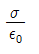
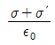
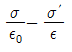
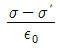
(정답률: 68%)

2. 자계와 직각으로 놓인 도체에 I[A]의 전류를 흘릴 때 f[N]의 힘이 작용하였다. 이 도체를 v[m/s]의 속도로 자계와 직각으로 운동시킬 때의 기전력 e[V]는?
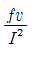
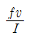
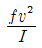
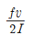
(정답률: 71%)
3. 폐회로에 유도되는 유도기전력에 관한 설명으로 옳은 것은?
- 유도기전력은 권선수의 제곱에 비례한다
- 렌츠의 법칙은 유도기전력의 크기를 결정하는 법칙이다
- 자계가 일정한 공간 내에서 폐회로가 운동하여도 유도기전력이 유도된다
- 전계가 일정한 공간 내에서 폐회로가 운동하여도 유도기전력이 유도된다
(정답률: 64%)
4. 반지름 a, b인 두 개의 구 형상 도체 전극이 도전율 k인 매질 속에 중심거리 r만큼 떨어져 있다. 양 전극간의 저항은?(오류 신고가 접수된 문제입니다. 반드시 정답과 해설을 확인하시기 바랍니다.)
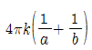
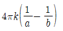
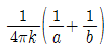
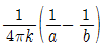
(정답률: 65%)
5. 그림과 같이 반지름 a인 무한장 평행도체 A, B가 간격 d 로 놓여 있고，단위 길이당 각각 +λ, -λ의 전하가 균일하게 분포되어 있다. A, B 도체 간의 전위차 [V] 는? (단, d≫a 이다.)
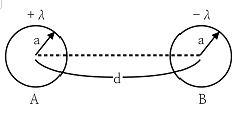
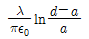
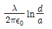
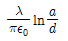
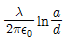
(정답률: 60%)
6. 매질1(E1)은 나일론(비유전율 Es=4) 이고, 매질2(E2)는 진공일 때 전속밀도 D가 경계면에서 각각 θ1, θ2의 각을 이룰 때，θ2=30° 라면θ1의 값은?
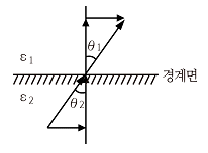
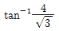
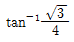
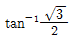
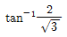
(정답률: 66%)
7. 자기회로에 관한 설명으로 옳은 것은?
- 자기회로의 자기저항은 자기회로의 단면적에 비례한다
- 자기회로의 기자력은 자기저항과 자속의 곱과 같다
- 자기저항 Rm1과 Rm2을 직렬연결 시 합성 자기저항은
 이다.
이다. - 자기회로의 자기저항은 자기회로의 길이에 반비례한다.
(정답률: 74%)
8. 두 개의 콘덴서를 직렬접속하고 직류전압을 인가시 설명 으로 옳지 않은 것은?
- 정전용량이 작은 콘덴서에 전압이 많이 걸린다
- 합성 정전용량은 각 콘덴서의 정전용량의 합과 같다
- 합성 정전용량은 각 콘덴서의 정전용량 보다 작아진다
- 각 콘덴서의 두 전극에 정전유도에 의하여 정·부의 동일한 전하가 나타나고 전하량은 일정하다
(정답률: 67%)
9. 길이가 1cm, 지름이 5㎜ 인 동선에 1A 의 전류를 흘렸을 때 전자가 동선을 흐르는 데 걸리는 평균 시간은 약 몇 초인가? (단, 동선의 전자밀도는 1×1028[개/m3]이다)
- 3
- 31
- 314
- 3147
(정답률: 66%)
10. 일반적인 전자계에서 성립되는 기본방정식이 아닌 것은? (단, i는 전류밀도, p는 공간전하밀도이다.)
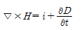
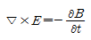
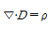
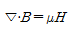
(정답률: 69%)
11. 전계 E[V/m], 자계 H[AT/m] 의 전자계가 평면파를 이루고， 자유공간으로 단위 시간에 전파될 때 단위 면적당 전력밀도 [W/m2] 의 크기는?
- EH2
- EH
- 1/2EH2
- 1/2EH
(정답률: 77%)
12. 옴의 법칙을 미분형태로 표시하면? (단,i는 전류밀도이고, p는 저항률, E는 전계이다.)
- i=(1/p) × E
- i=pE
- i=divE
- i=▽×E
(정답률: 64%)
13. 0.2[㎌] 인 평행판 공기 콘덴서가 있다. 전극간에 그 간격의 절반 두께의 유리판을 넣었다면콘덴서의 용량은 약 몇 [㎌] 인가?(단，유리의 비유전율은 10 이다.)
- 0.26
- 0.36
- 0.46
- 0.56
(정답률: 68%)
14. 한 변의 길이가 √2[m] 인 정사각형의 4개 꼭짓점에 +10-9[C]의 점전하가 각각 있을 때 이 사각형의 중심 에서의 전위 [V] 는?
- 0
- 18
- 36
- 72
(정답률: 53%)
15. 기계적인 변형력을 가할 때，결정체의 표면에 전위차가 발생되는 현상은?
- 볼타효과
- 전계효과
- 압전효과
- 파이로 효과
(정답률: 76%)
16. 면적이 S[m2] 인 금속판 2매를 간격이 d[m] 되게 공기 중에 나란하게 놓았을 때 두 도체 사이의 정전용량 [F] 은?
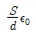
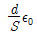
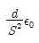
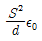
(정답률: 77%)
17. 면전하 밀도가ps[C/m2] 인 무한히 넓은 도체판에서 R[m] 만큼 떨어져 있는 점의 전계의 세기 [V/m] 는?
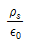
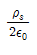
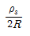
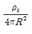
(정답률: 62%)
18. 300회 감은 코일에 3A 의 전류가 흐를 때의 기자력 [AT] 은?
- 10
- 90
- 100
- 900
(정답률: 84%)
19. 구리로 만든 지름 20[cm] 의 반구에 물을 채우고 그 중에 지름 10[cm] 의 구를 띄운다. 이 때에 두 개의 구가 동심구라면 두 구 사이의 저항은 약 몇 [Ω] 인가? (단， 물의 도전율은 10-3[℧/m]라 하고，물이 충만 되어 있다고 한다)
- 1590
- 2590
- 2800
- 3180
(정답률: 42%)
20. 자기회로에서 칠심의 투자율을 μ라 하고 회로의 길이를 l이라 할 때 그 회로의 일부에 미소공극 lg를 만들면 회로 의 자기저항은 처음의 몇 배인가? (단, lg≪l, 즉, l-lg≒l 이다.)
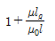
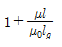
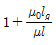
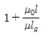
(정답률: 61%)
2과목: 전력공학
21. 초고압 송전계통에 단권변압기가 사용되는데 그 이유로 볼 수 없는 것은?
- 효율이 높다
- 단락전류가 적다
- 전압변동률이 적다
- 자로가 단축되어 재료를 절약할 수 있다
(정답률: 58%)
22. 피뢰기의 구비조건이 아닌 것은?
- 상용주파 방전개시 전압이 낮을 것
- 충격방전 개시전압이 낮을 것
- 속류 차단능력이 클 것
- 제한전압이 낮을 것
(정답률: 64%)
23. 어떤 화력 발전소의 증기조건이 고온원 540℃, 저온원 30℃ 일 때 이 온도 간에서 움직이는 카르노 사이클의 이론 열효율[%]은?
- 85.2
- 80.5
- 75.3
- 62.7
(정답률: 41%)
24. 그림과 같은 회로의 영상, 정상, 역상 임피던스 Z0,Z1, Z2는?
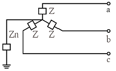
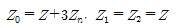
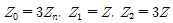
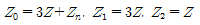
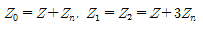
(정답률: 66%)
25. 비접지식 송전선로에 있어서 1선 지락고장이 생겼을 경우 지락점에 흐르는 전류는?
- 직류 전류
- 고장상의 영상전압과 동상의 전류
- 고장상의 영상전압보다 90도 빠른 전류
- 고장상의 영상전압보다 90도 늦은 전류
(정답률: 66%)
26. 가공전선로에 사용하는 전선의 굵기를 결정할 때 고려 할 사항이 아닌 것은?
- 절연저항
- 전압강하
- 허용전류
- 기계적 강도
(정답률: 69%)
27. 조상설비가 아닌 것은?
- 정지형무효전력 보상장치
- 자동고장구분개폐기
- 전력용콘덴서
- 분로리액터
(정답률: 66%)
28. 코로나현상에 대한 설명이 아닌 것은?
- 전선을 부식 시킨다
- 코로나 현상은 전력의 손실을 일으킨다
- 코로나 방전에 의하여 전파 장해가 일어난다
- 코로나 손실은 전원 주파수의 2/3 제곱에 비례한다
(정답률: 75%)
29. 다음 ( ① ), ( ② ), ( ③ )에 들어갈 내용으로 옳은 것은?
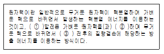
- ① 원자핵융합 ② 융합 ③ 결합
- ① 핵결합 ② 반응 ③ 융합
- ① 핵융합 ② 융합 ③ 핵반응
- ① 핵반응 ② 반응 ③ 결합
(정답률: 73%)
30. 경간 200m, 장력 1000 kg, 하중 2kg/m 인 가공전선의 이도 (dip) 는 몇 m 인가?
- 10
- 11
- 12
- 13
(정답률: 76%)
31. 영상변류기를 사용하는 계전기는?
- 과전류계전기
- 과전압계전기
- 부족전압계전기
- 선택지락계전기
(정답률: 67%)
32. 전력계통의 안정도 향상 방법이 아닌 것은?
- 선로 및 기기의 리액턴스를 낮게 한다
- 고속도 재폐로 차단기를 채용한다
- 중성점 직접접지방식을 채용한다
- 고속도 AVR 을 채용한다
(정답률: 59%)
33. 증식비가 1보다 큰 원자로는?
- 경수로
- 흑연로
- 중수로
- 고속증식로
(정답률: 66%)
34. 송전용량이 증가함에 따라 송전선의 단락 및 지락전류도 증가하여 계통에 여러 가지 장해요인이 되고 있다 이들의 경감대책으로 적합하지 않은 것은?
- 계통의 전압을 높인다
- 고장 시 모선 분리 방식을 채용한다
- 발전기와 변압기의 임피던스를 작게 한다
- 송전선 또는 모선 간에 한류리액터를 삽입한다
(정답률: 54%)
35. 송배전 선로에서 선택지락계전기 (SGR)의 용도는?
- 다회선에서 접지 고장 회선의 선택
- 단일 회선에서 접지 전류의 대소 선택
- 단일 회선에서 접지 전류의 방향 선택
- 단일 회선에서 접지 사고의 지속 시간 선택
(정답률: 78%)
36. 그림과 같은 회로의 일반 회로정수가 아닌 것은?
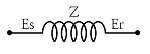
- B=Z+1
- A=1
- C=0
- D=1
(정답률: 74%)
37. 송전선로의 중성점을 접지하는 목적이 아닌 것은?
- 송전 용량의 증가
- 과도 안정도의 증진
- 이상 전압 발생의 억제
- 보호 계전기의 신속，확실한 동작
(정답률: 65%)
38. 부하전류가 흐르는 전로는 개폐할 수 없으나 기기의 점검이나 수리를 위하여 회로를 분리하거나，계통의 접속을바꾸는데 사용하는 것은?
- 차단기
- 단로기
- 전력용 퓨즈
- 부하 개폐기
(정답률: 71%)
39. 보호계전기와 그 사용 목적이 잘못된 것은?
- 비율차동계전기 : 발전기 내부 단락 검출용
- 전압평형계전기 : 발전기 출력측 PT 퓨즈 단선에 의한 오작동 방지
- 역상과전류계전기 : 발전기 부하 불평형 회전자 과열소손 방지
- 과전압계전기 : 과부하 단락사고
(정답률: 60%)
40. 송전선로의 정상임피던스를 Z1 , 역상임피던스를 Z2, 영상임피던스를 Z0라 할 때 옳은 것은?
- Z1=Z2=Z0
- Z1=Z2＜Z0
- Z1＞Z2=Z0
- Z1＜Z2=Z0
(정답률: 60%)
3과목: 전기기기
41. 그림과 같은 회로에서 전원전압의 실효치 200[V], 점호각 30°일 때 출력전압은 약 몇 V 인가? (단, 정상상태이다.)
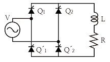
- 157.8
- 168.0
- 177.8
- 187.8
(정답률: 47%)
42. 분권발전기의 회전 방향을 반대로 하면 일어나는 현상은?
- 전압이 유기된다
- 발전기가 소손된다
- 잔류자기가 소멸된다
- 높은 전압이 발생한다
(정답률: 66%)
43. 극수가 24일 때, 전기각 180°에 해당되는 기계각은?
- 7.5°
- 15°
- 22.5°
- 30°
(정답률: 68%)
44. 단락비가 큰 동기기의 특징으로 옳은 것은?
- 안정도가 떨어진다
- 전압 변동률이 크다
- 선로 충전용량이 크다
- 단자 단락 시 단락 전류가 적게 흐른다
(정답률: 53%)
45. 단상 직권 정류자 전동기에서 보상권선과 저항도선의 작용을 설명한 것 중 틀린 것은?
- 보상권선은 역률을 좋게 한다
- 보상권선은 변압기의 기전력을 크게 한다
- 보상권선은 전기자 반작용을 제거해 준다
- 저항도선은 변압기 기전력에 의한 단락전류를 작게 한다
(정답률: 53%)
46. 5 kVA, 3000/200 V 의 변압기의 단락시험에서 임피던스 전압 120V, 동손 150W 라 하면 %저항강하는 약 몇 %인가?
- 2
- 3
- 4
- 5
(정답률: 58%)
47. 변압기의 규약효율 산출에 필요한 기본요건이 아닌 것은?
- 파형은 정현파를 기준으로 한다
- 별도의 지정이 없는 경우 역률은 100% 기준이다
- 부하손은 40℃를 기준으로 보정한 값을 사용한다
- 손실은 각 권선에 대한 부하손의 합과 무부하손의 합이다
(정답률: 66%)
48. 직류기에 보극을 설치하는 목적은?
- 정류 개선
- 토크의 증가
- 회전수 일정
- 기동토크의 증가
(정답률: 69%)
49. 4극 3상 동기기가 48개의 슬롯을 가진다.전기자 권선 분포계수 Kd를 구하면 약 얼마인가?
- 0.923
- 0.945
- 0.957
- 0.969
(정답률: 54%)
50. 슬립 st에서 최대 토크를 발생하는 3상 유도전동기에 2차측 한 상의 저항을 r2라 하면 최대토크로 기동하기 위한 2차측 한 상에 외부로부터 가해 주어야 할 저항은?
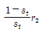
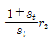
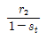
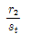
(정답률: 67%)
51. 어떤 단상변압기의 2차 무부하 전압이 240V 이고 정격 부하시의 2차 단자 전압이 230V 이다 전압 변동률은 약 몇 %인가?
- 4.35
- 5.15
- 6.65
- 7.35
(정답률: 72%)
52. 일반적인 농형 유도전통기에 비하여 2중 농형 유도전동기의 특징으로 옳은 것은?
- 손실이 적다
- 슬립이 크다
- 최대 토크가 크다
- 기동 토크가 크다
(정답률: 57%)
53. 유도전동기의 안정 운전의 조건은? (단, Tm : 전동기 토크, TL : 부하토크, n : 회전수)
(정답률: 64%)
54. 사이리스터에서 게이트 전류가 증가하면?
- 순방향 저지전압이 증가한다
- 순방향 저지전압이 감소한다
- 역방향 저지전압이 증가한다
- 역방향 저지전압이 감소한다
(정답률: 44%)
55. 60Hz 인 3상 8극 및 2극의 유도전동기를 차동종속으로 접속하여 운전할 때의 무부하속도 [rpm] 는?
- 720
- 900
- 1000
- 1200
(정답률: 60%)
56. 원통형 회전자를 가진 동기발전기는 부하각 δ가 몇 도 일 때 최대 출력을 낼 수 있는가?
- 0°
- 30°
- 60°
- 90°
(정답률: 60%)
57. 직류발전기의 병렬운전에 있어서 균압선을 붙이는 발전기는?
- 타여자발전기
- 직권발전기와 분권발전기
- 직권발전기와 복권발전기
- 분권발전기과 복권발전기
(정답률: 65%)
58. 변압기의 절연내력시험 방법이 아닌 것은?
- 가압시험
- 유도시험
- 무부하시험
- 충격전압시험
(정답률: 54%)
59. 직류발전기의 유기기전력이 230V, 극수가 4, 정류자 편수가 162인 정류자 편간 평균전압은 약 몇 V 인가? (단, 권선법은 중권이다)
- 5.68
- 6.28
- 9.42
- 10.2
(정답률: 57%)
60. 동기발전기의 단자 부근에서 단락이 일어났다고 하면 단락전류는 어떻게 되는가?
- 전류가 계속 증가한다
- 큰 전류가 증가와 감소를 반복한다
- 처음에는 큰 전류이나 점차 감소한다
- 일정한 큰 전류가 지속적으로 흐른다
(정답률: 76%)
4과목: 회로이론 및 제어공학
61. 다음과 같은 시스템에 단위계단입력 신호가 가해졌을 때 지연시간에 가장 가까운 값[sec]은?
- 0.5
- 0.7
- 0.9
- 1.2
(정답률: 37%)
62. 그림에서 ①에 알맞은 신호 이름은?
- 조작량
- 제어량
- 기준입력
- 동작신호
(정답률: 59%)
63. 드모르간의 정리를 나타낸 식은?
(정답률: 65%)
64. 다음 단위 궤환 제어계의 미분방정식은?
(정답률: 51%)
65. 특성방정식이 다음과 같다. 이를 z 변환하여 z 평면도에 도시할 때 단위 원 밖에 놓일 근은 몇 개인가?
- 0
- 1
- 2
- 3
(정답률: 46%)
66. 다음 진리표의 논리소자는?
- OR
- NOR
- NOT
- NAND
(정답률: 66%)
67. 근궤적이 s평면의 jw축과 교차할 때 폐루프의 제어계는?
- 안정하다.
- 알 수 없다.
- 불안정하다.
- 임계상태이다.
(정답률: 70%)
68. 특성방정식 S3+2S2+(k+3)S+10=0에서 Routh 안정도 판별법으로 판별시 안정하기 위한 k의 범위는?
- k＞2
- k＜2
- k＞1
- k＜1
(정답률: 68%)
69. 그림과 같은 신호흐름 선도에서 전달함수 는 무엇인가?
(정답률: 45%)
70. 의 이득여유[dB]는?
- 20
- -20
- 0
- ∞
(정답률: 61%)
71. R1=R2=100Ω 이며, L1=5H 인 회로에서 시정수는 몇 sec 인가?
- 0.001
- 0.01
- 0.1
- 1
(정답률: 69%)
72. 최대값이 10V인 정현파 전압이 있다.t=0에서의 순시값이 5V이고 이 순간에 전압이 증가하고 있다. 주파수가 60Hz 일 때, t=2ms에서의 전압의 순시값 [V]은?
- 10 sin30°
- 10 sin43.2°
- 10 sin73.2°
- 10 sin103.2°
(정답률: 45%)
73. 비접지 3상 Y회로에서 전류 Ia=15+j2A,Ib=-20-j14A일 경우 Ic[A]는?
- 5+j12
- -5+j12
- 5-j12
- -5-j12
(정답률: 56%)
74. 그림과 같은 회로의 구동점 임피던스 Zab는?
(정답률: 52%)
75. 콘덴서 C[F]에 단위 임펄스의 전류원을 접속하여 동작 시키면 콘덴서의 전압 Vc(t)는? (단, u(t)는 단위계단 함수이다.)
- Vc(t)=C
- Vc(t)=Cu(t)
- Vc(t)=1/C
- Vc(t)=(1/C)u(t)
(정답률: 53%)
76. 그림과 같은 구형파의 라플라스 변환은?
(정답률: 69%)
77. 그림과 같은 회로의 콘덕턴스 G2에 흐르는 전류 i는 몇 A 인가?
- -5
- 5
- -10
- 10
(정답률: 47%)
78. 분포정수 전송회로에 대한 설명이 아닌 것은?
 인 회로를 무왜형 회로라 한다.
인 회로를 무왜형 회로라 한다.- R=G=0인 회로를 무손실 회로라 한다.
- 무손실 회로와 무왜형 회로의 감쇠정수는 √RG이다.
- 무손실 회로와 무왜형 회로에서의 위상속도는
 이다.
이다.
(정답률: 63%)
79. 다음 회로에서 절점 a와 절점 b의 전압이 같은 조건은?
- R1R3=R2R4
- R1R2=R3R4
- R1+R3=R2+R4
- R1+R2=R3+R4
(정답률: 64%)
80. 그림과 같은 파형의 파고율은?
- 1
- 2
- √2
- √3
(정답률: 50%)
5과목: 전기설비기술기준 및 판단기준
81. 가섭선에 의하여 시설하는 안테나가 있다 이 안테나 주위 에 경동연선을 사용한 고압가공전선이 지나가고 있다면 수평 이격거리는 몇 cm 이상이어야 하는가?
- 40
- 60
- 80
- 100
(정답률: 43%)
82. 지중에 매설되어 있는 금속제 수도관로를 각종 접지공사 의 접지극으로 사용하려면 대지와의 전기저항 값이 몇 Ω 이하의 값을 유지하여야 하는가?
- 1
- 2
- 3
- 5
(정답률: 52%)
83. 가공전선로의 지지물에 시설하는 지선으로 연선을 사용할 경우에는 소선이 최소 몇 가닥 이상이어야 하는가?
- 3
- 4
- 5
- 6
(정답률: 70%)
84. 옥내의 저압전선으로 나전선 사용이 허용되지 않는 경우 는?
- 금속관공사에 의하여 시설하는 경우
- 버스덕트공사에 의하여 시설하는 경우
- 라이팅덕트공사에 의하여 시설하는 경우
- 애자사용공사에 의하여 전개된 곳에 전기로용 전선을 시설하는 경우
(정답률: 55%)
85. 가공전선로의 지지물에 취급자가 오르고 내리는 데 사용 하는 발판 볼트 등은 지표상 몇 m 미만에 시설하여서는 아니 되는가?
- 1.2
- 1.5
- 1.8
- 2.0
(정답률: 67%)
86. 철도ㆍ궤도 또는 자동차도의 전용터널 안의 전선로의 시설 방법으로 틀린 것은?
- 고압전선은 케이블공사로 하였다
- 저압전선을 가요전선관 공사에 의하여 시설하였다
- 저압전선으로 지름 2.0mm의 경동선을 사용하였다
- 저압전선을 애자사용공사에 의하여 시설하고 이를 레일면상 또는 노면상 2.5m 이상의 높이로 유지하였다
(정답률: 50%)
87. 수소냉각식 발전기 등의 시설기준으로 틀린 것은?
- 발전기 안의 수소의 온도를 계측하는 장치를 시설 할 것
- 수소를 통하는 관은 수소가 대기압에서 폭발하는 경우에 생기는 압력에 견디는 강도를 가질 것
- 발전기 안의 수소의 순도가 95% 이하로 저하한 경우에 이를 경보하는 장치를 시설할 것
- 발전기 안의 수소의 압력을 계측하는 장치 및 그 압력이 현저히 변동한 경우에 이를 경보하는 장치를 시설할 것
(정답률: 68%)
88. 과전류차단기로 저압전로에 사용하는 80A 퓨즈를 수평 으로 붙이고，정격전류의 1.6배 전류를 통한 경우에 몇 분 안에 용단되어야 하는가? (단, IEC 표준을 도입한 과전류차단기로 저압전로에 사용하는 퓨즈는 제외한다)(오류 신고가 접수된 문제입니다. 반드시 정답과 해설을 확인하시기 바랍니다.)
- 30분
- 60분
- 120분
- 180분
(정답률: 56%)
89. 조상기의 내부에 고장이 생긴 경우 자동적으로 전로로 부터 차단하는 장치는 조상기의 뱅크용량이 몇 kVA 이상 이어야 시설하는가?
- 5000
- 10000
- 15000
- 20000
(정답률: 62%)
90. 발열선을 도로, 주차장 또는 조영물의 조영재에 고정 시켜 시설하는 경우 발열선에 전기를 공급하는 전로의 대지전압은 몇 V 이하이어야 하는가?
- 100
- 150
- 200
- 300
(정답률: 65%)
91. 전로에 400V를 넘는 기계기구를 시설하는 경우 기계기구의 철대 및 금속제 외함의 접지저항은 몇 Ω 이상인가?(문제 오류로 가답안 발표시 1번으로 발표되었지만 확정답안 발표시 전항 정답 처리 되었습니다. 여기서는 가답안인 1번을 누르면 정답 처리 됩니다. 자세한 내용은 해설을 참조하세요.)
- 10
- 30
- 50
- 100
(정답률: 63%)
92. 사람이 접촉할 우려가 있는 경우 고압 가공전선과 상부 조영재의 옆쪽에서의 이격거리는 몇 m 이상이어야 하는 가? 단, 전선은 경동연선이라고 한다.
- 0.6
- 0.8
- 1.0
- 1.2
(정답률: 51%)
93. 특고압 가공전선로에서 사용전압이 60kV를 넘는 경우, 전화선로의 길이 몇 km 마다 유도전류가 3μA를 넘지 않도록 하여야 하는가?
- 12
- 40
- 80
- 100
(정답률: 58%)
94. 고압의 계기용 변성기의 2차측 전로에는 몇 종 접지 공사를 하여야 하는가?(관련 규정 개정전 문제로 여기서는 기존 정답인 3번을 누르면 정답 처리됩니다. 자세한 내용은 해설을 참고하세요.)
- 제1종 접지공사
- 제2종 접지공사
- 제3종 접지공사
- 특별 제3종 접지공사
(정답률: 48%)
95. 가공 직류 절연 귀선은 특별한 경우를 제외하고 어느 전선에 준하여 시설하여야 하는가?(오류 신고가 접수된 문제입니다. 반드시 정답과 해설을 확인하시기 바랍니다.)
- 저압 가공전선
- 고압 가공전선
- 특고압 가공전선
- 가공 약전류 전선
(정답률: 34%)
96. 직선형의 철탑을 사용한 특고압 가공전선로가 연속하여 10기 이상 사용하는 부분에는 몇 기 이하마다 내장 애자 장치가 되어 있는 철탑 1기를 시설하여야 하는가?
- 5
- 10
- 15
- 20
(정답률: 67%)
97. 옥외용 비닐절연전선을 사용한 저압가공전선이 횡단 보도교 위에 시설되는 경우에 그 전선의 노면상 높이는 몇 m 이상으로 하여야 하는가?
- 2.5
- 3.0
- 3.5
- 4.0
(정답률: 30%)
98. 애자사용 공사를 습기가 많은 장소에 시설하는 경우 전선과 조영재 사이의 이격거리는 몇 cm 이상이어야 하는가? 단, 사용전압은 440V인 경우이다.
- 2.0
- 2.5
- 4.5
- 6.0
(정답률: 35%)
99. 저압 옥내 간선 및 분기회로의 시설 규정 중 틀린 것은?(오류 신고가 접수된 문제입니다. 반드시 정답과 해설을 확인하시기 바랍니다.)
- 저압 옥내 간선의 전원측 전로에는 간선을 보호하는 과전류차단기를 시설하여야 한다.
- 간선보호용 과전류차단기는 옥내 간선의 허용전류를 초과하는 정격전류를 가져야 한다.
- 간선으로 사용하는 전선은 전기사용기계 기구의 정격전류 합계 이상의 허용전류를 가져야 한다.
- 저압 옥내 간선과 분기점에서 전선의 길이가 3m 이하인 곳에 개폐기 및 과전류차단기를 시설하여야 한다.
(정답률: 39%)
100. 터널 등에 시설하는 사용전압이 220V인 전구선이 0.6/1kV EP 고무 절연 클로로프렌 캡타이어 케이블일 경우 단면적은 최소 몇 mm2 이상이어야 하는가?
- 0.5
- 0.75
- 1.25
- 1.4
(정답률: 60%)